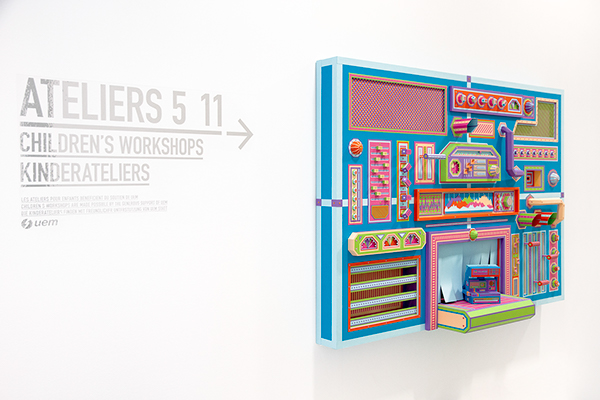

Creative Factory
Creation of an handmade installation made out of colored paper for the Children's Workshop (5-11 yo) at the Pompidou Center of Metz. The idea behind the piece was to highlight the contradiction between a unique hand crafted machine and the automation of industrial production of objects. To use the machine, some paper scraps have to be inserted in the main module, once the scraps are refined into geometric shapes, the control panel finally reveals the papercraft. In this workshop, children will play with handmade rubber stamps and build their own papercrafts of a simplified machine, paper food, etc...